1. Download it
ps. if you use kali linux you can skip the 1.st and 2.nd step.
Go to PortSwigger releases, select your os/architecture and download it.
2. Installation (linux)
Run ls in your terminal to take a look what is called your burp shell. Notice it's "raw", it doesn't look run-able.
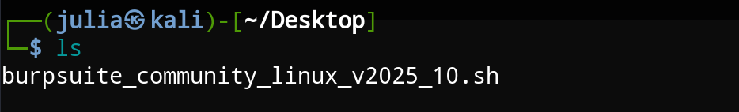Now give it permission to execute.
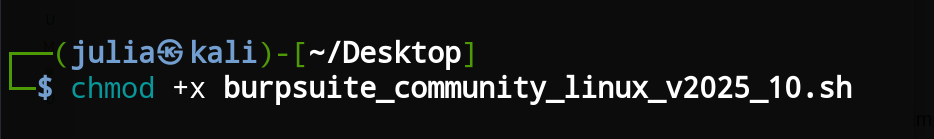See how it's more alive now. You can tell it is a program not just any file.
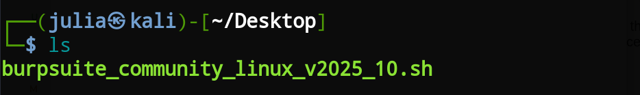Give it a run and it'll start unpacking.
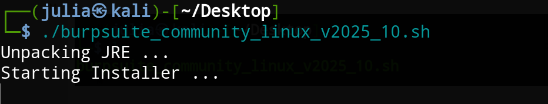This wizard will appear, just click next > next > next until it is done.
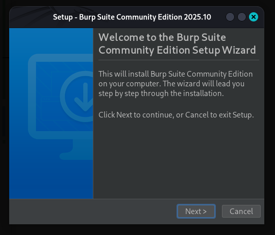3. Certificate
3.1 FoxyProxy configuration
Open your browser and search for the foxyproxy extension
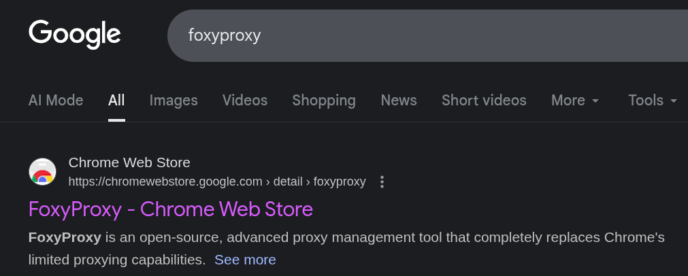Add it to your browser
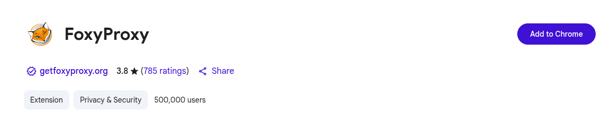Pin the extension
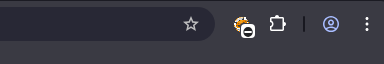Let's create a proxy configuration. Hit "Options" at the bottom left.
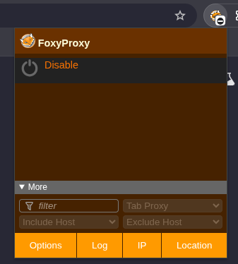This will lead you to the following page.
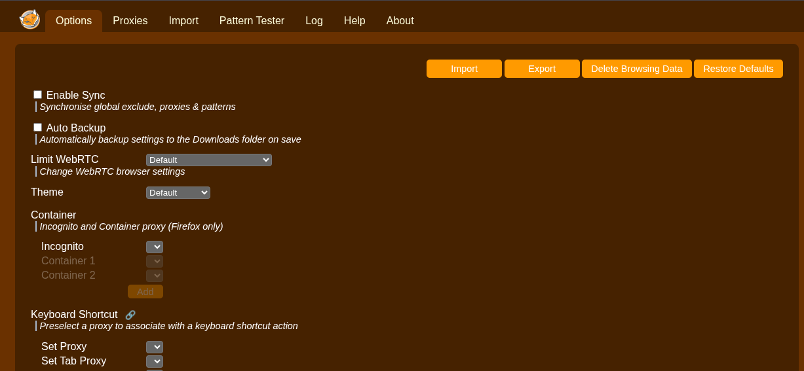Then go to "Proxies" at the top tab
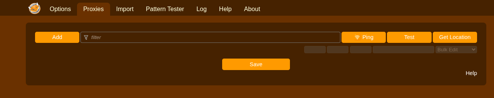Click "Add". Follow the below instructions to set it up correctly.
- Title: burp
- Hostname: 127.0.0.1
- Port: 8080
Then click "Save"
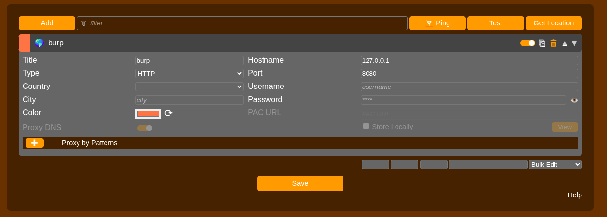Click again in the extension and you can see it's already there. Hit "burp" to turn it on.
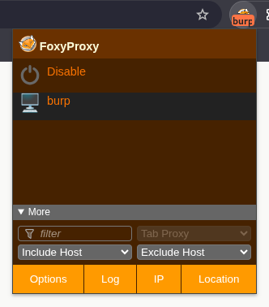3.2 Intercept on
Open Burp.
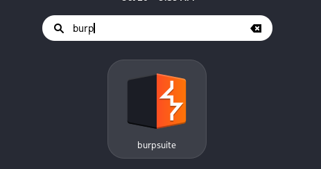click next > next up to the dashboard.
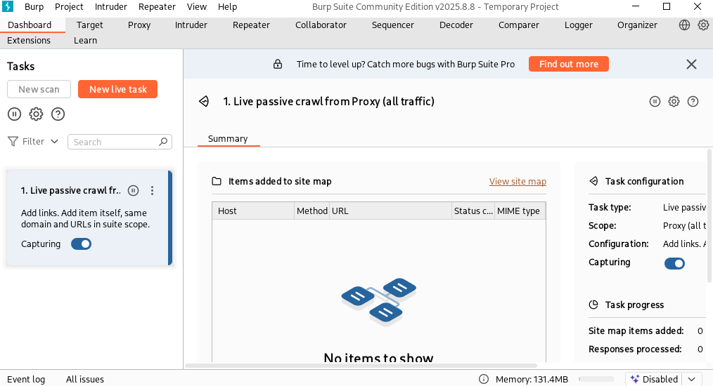Now look for "Proxy" at the top
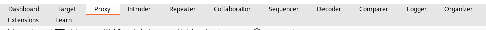Turn intercept on
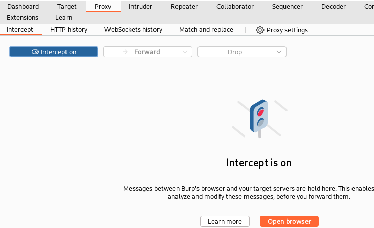Now go to this url so you can download your certificate: http://burpsuite/
If you did everything right you'll be able to see this page, then click "CA Certificate" to start the download.
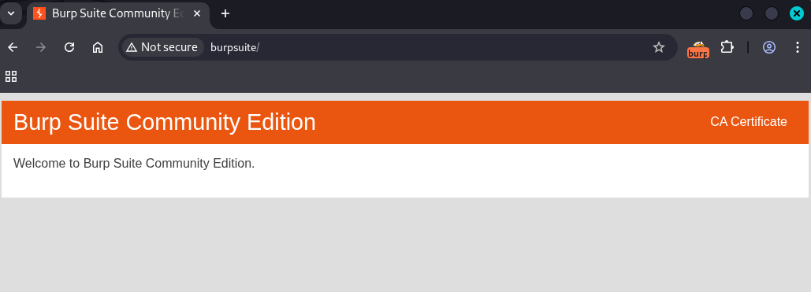3.3 Import certificate
Go to your browser settings and search for "certificate".
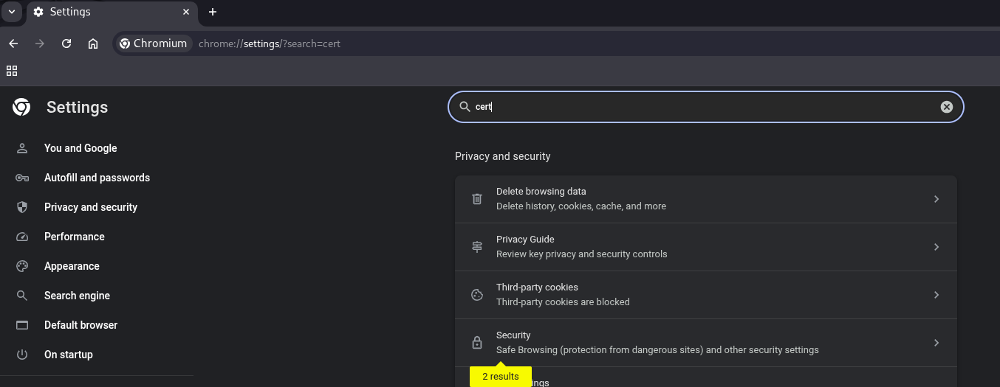Security > Manage certificates
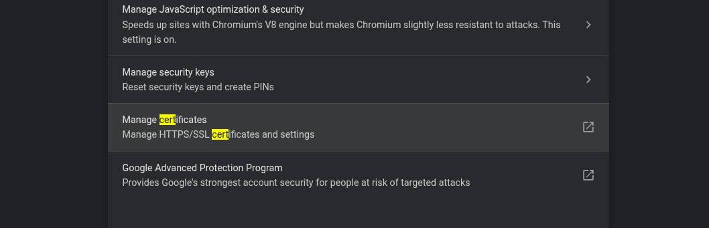Local certificates > Installed by you
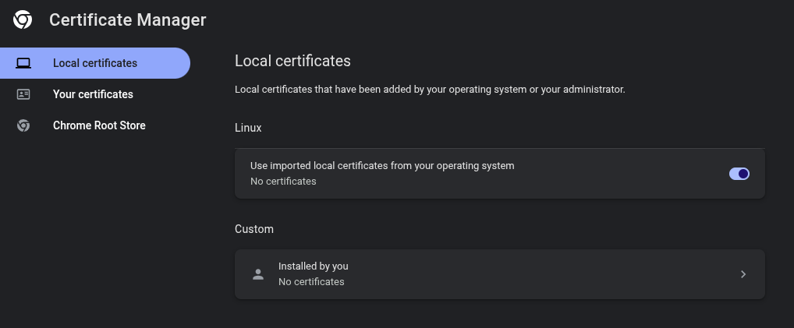Trusted Certificates > Import.
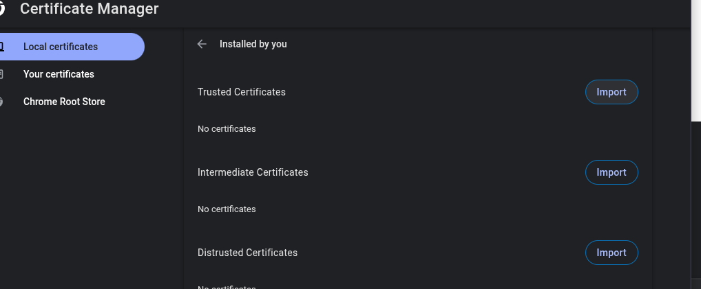Select the file from burp suite you downloaded earlier
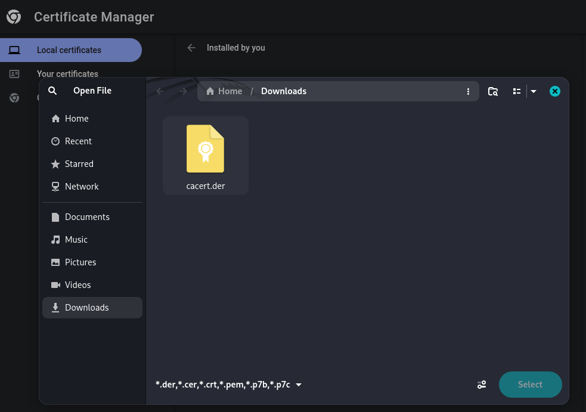This is it!
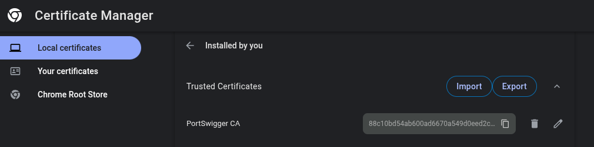